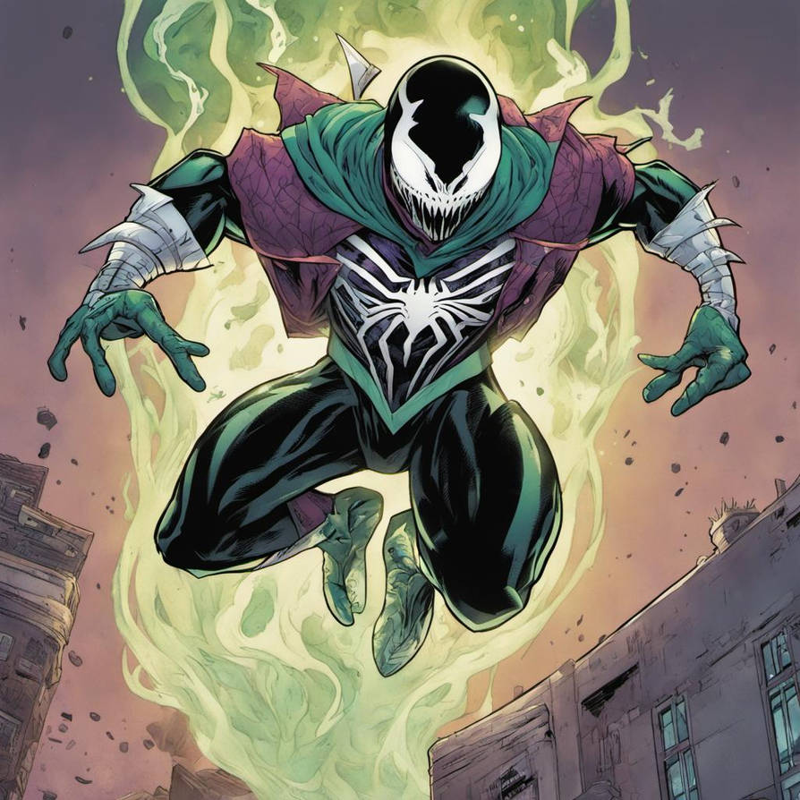
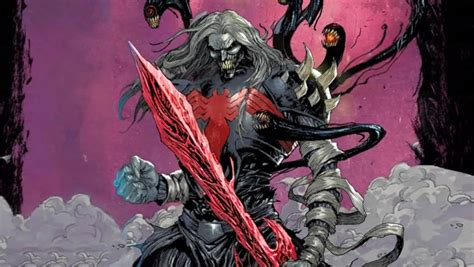
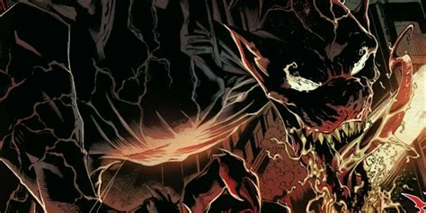

Symbiotes
Introduction/Origin
The Symbiotes were created by Knull, refered to as god of the symbiotes. They are from the planet Klyntar, a cosmic prison holding Knull and the Necrosword. The symbiote was first introduced in Secret Wars, as an alien suit, worn by Spiderman, and he then kept it for a few issues. He then found out it was enhancing his anger and making him more violent. When eventually separated, the symbiote bonded to Eddie Brock. Eddie then realises that Peter Parker is spiderman, due to the symbiote hive mind informing him. This leads into Eddie and the symbiote becoming the Vilain/Anti Hero Venom. The most famous symbiote.
What Makes them so dangerous
What makes the symbiotes so dangerous is their adaptability. they have the ability to take overtake hosts, this allows them to survive. only if the host is compatable.
Another factor that makes them dangerous is the fact that thye are able to take powers from previous hosts, for example:
- Peter Parker(Spiderman)
- Mac Gargan(The Scorpion)
- Thadeus Ross(Red Hulk)
- Otto Octavius(Doctor Octopus)
- Malikeith(Dark Elf)
- Quentin Beck(Mysterio)
- Drax(Drax the Destroyer)
| Image | Description |
|---|---|
 |
Peter Parker, First host of the in many ubiverses. |
 |
Eddie Brock, most well known host for Venom |
 |
Carnage (Cletus Cassidy) murderous son of Venom |
 |
CyberVenom Kingpin weapon of mass destruction |
|  | Venom Mysterio Illusions and symbiote powers |
Most powerful Symbiotes
-
Venom, God of Light:
Venom became the God of Light after a drawn out fight with Knull. he was able to take the power from Knull, and became the King In Black, basically becoming the new king of all symbiotes. now he is the protector of the light as the keeper of the dark. Eddie Brock, bonded to a symbiote that’s bonded to a god. -
Knull:
Knull is an eldritch god and the creator of the symbiotes. While residing in the void he was awakened when the Celestials invaded. Knull was chosen by the Celestials to serve as the King in Black but he rejected the responsibility. With the first symbiote in the form of a sword, he decapitated one of them and used its severed head's power to refine the blade, linking both him and the Necrosword to the fallen god

-
Grendal:
Grendal was a dragon, formed from the blood of knull, he then sent the dragon, and another he created to destroy and create trouble for the gods and celestials, he then landed on earth, where he was dormant until Knull invaded. Grendal had a canibalistic cult form around him in Denmark. they had set up behind a waterfall. some point after this, the dragons attacked Asgard, but were fended off

-
Carnage:
Carnage, was the cell mate of Eddie Brock, Venom. When Venom came to free Eddie from prison, a bit of the symbiote was left behind, and bonded to Cletus Cassidy, who then took on the name, Carnage. Carnage was already a serial killer before the symbiote, but after reciving he went on a murder spree, eventually ending up dying, then resurected. Upon resurection he formed a cult and began the steps of becoming Absolute Carnage, and freeing Knull


Table of Statistic Rating
| Category | Rating |
|---|---|
| Strength | 10/10 |
| Tech | 1/10 |
| Defense | 6/10 |
| Adaptability | 10/10 |
| Threat level(Single) | 8/10 |
| Threat level(Group) | 10/10 |